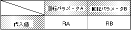

Return to previous page | Return to menu | Go to next page
void
Scroll function
Current rotation parameter change
void slCurRpara(flag)
Uint16 flag ;
flag Rotation parameter specification
Of the rotation parameters A and B, the parameter to be operated is designated.
None
For the parameter, substitute the values in the table below according to the rotation parameter to be used.

Note) The actual value is #defined in “sl_def.h”.
Reference: Chapter 8 Scroll
slCurRpara